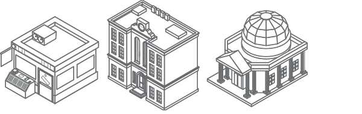

How we became India's largest environmental solutions provider
We’re so used to today’s sanitation standards, it can be easy to forget about how far we've come with waste collection. But it wasn’t that long ago that the handling of trash was inconsistent and resulted in unsightly piles lining city streets and sidewalks. That started to change in 1893 when a Dutch immigrant named Harm Huizenga began collecting trash in Chicago for a small fee. With little more than a modest wagon, he built up a reliable client base over the years by effectively managing the waste of a rapidly changing society. But in the post-war period, something happened that most waste providers weren’t ready for: a shift toward disposable products that were designed to make lives simpler.
A tangible look at how we're improving the lives of our customers.
21 LAKHS- municipal, commercial and industrial customers
20,000 EMPLOYEES- at our largest environmental solutions provider and recycler
Rs5,00,000+ alternative technology investment in over 50 companies